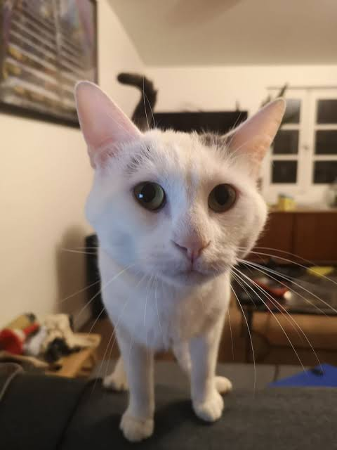

Le chat est un animal très répandu dans les foyers français. Sa popularité vient en partie de
son indépendance, appréciée par de nombreux propriétaires.
Comment choisir sa race
Européen
Maine Coon
Siamois
Persan
Ragdoll
Chaque race possède des besoins spécifiques, notamment en matière d'entretien du pelage.
Comment choisir sa race
Évaluer le temps disponible pour l'entretien du pelage.
Vérifier la compatibilité avec d'autres animaux du foyer.
Consulter un éleveur ou un vétérinaire avant l'adoption.
L'alimentation des chats
Un bon alimentation est essentielle pour la santé de votre chat. Il est important de choisir un aliment adapté à
l'âge, à la taille et à l'état de santé de votre animal.
Choisir un aliment de qualité
Respecter les recommandations du vétérinaire
Adapter l'alimentation en fonction de l'âge et de l'état de santé

Le chat, un compagnon apprécié pour son caractère indépendant.